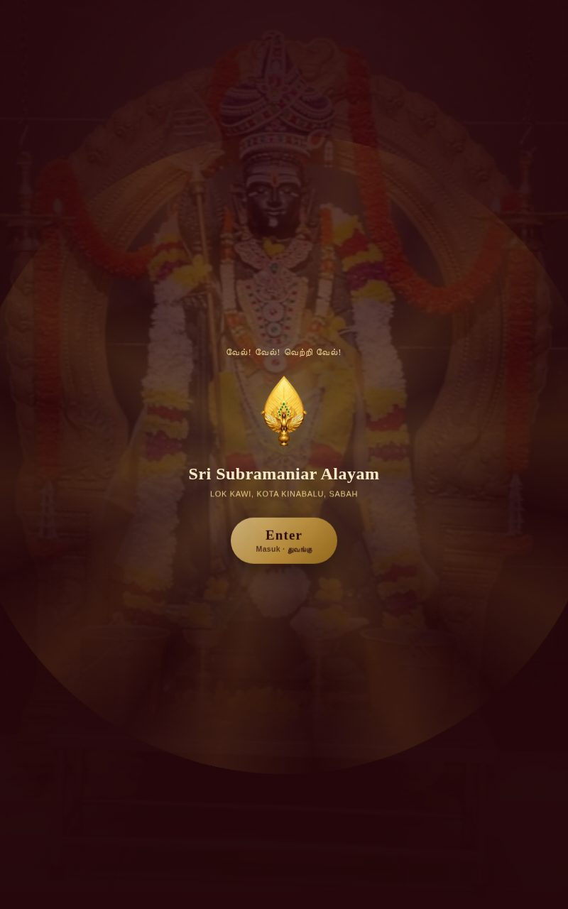
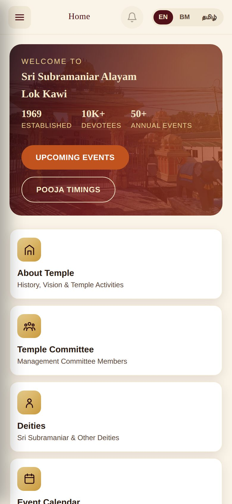
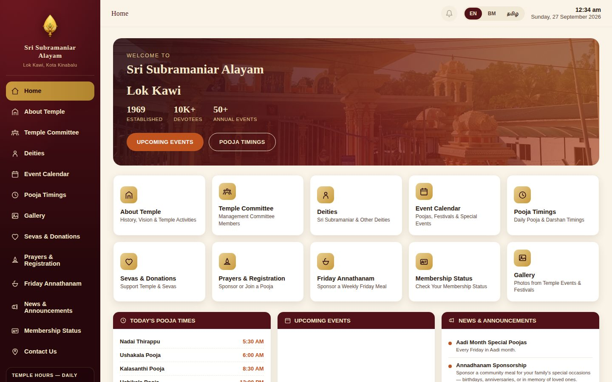

01
Registration that can't double-book
Ubayakarar, Annathanam and Participant slots are claimed in a Postgres database that locks the slot, so two devotees can't both win the same one — even in the same second.
Lok Kawi, Kota Kinabalu, Sabah
A trilingual platform for Sri Subramaniar Alayam — built once as a progressive web app, and running unmodified as a temple touch-screen kiosk, a tablet display, an installable phone app and a full website, with pooja registration that can never be double-booked.
Touch-screen kiosk, tablet, installable phone app and full website — one responsive codebase, deployed everywhere at once.
Password-protected admin pages let committee members edit every section and manage registrations themselves — no developer, no redeploy, live instantly.
No separate native builds and no duplicated content — one responsive PWA presents itself as a wide touch-screen kiosk in the temple, a tablet display, a compact app on a phone, and a full website on a desktop.






Ubayakarar, Annathanam and Participant slots are claimed in a Postgres database that locks the slot, so two devotees can't both win the same one — even in the same second.
More than fifteen sections editable from the browser. Each member has their own login, with separate access for Content and for Prayers & Bookings.
English, Bahasa Malaysia and Tamil across pages, menus and even committee names, switchable instantly without a page reload.
Devotees check their status by membership number. Only the matched record is returned, and the NRIC is never sent to the public page.
Devotees opt in with the bell icon and the committee sends to every subscribed device from the CMS. A WhatsApp “Chat with Us” card, welcome popup and notice ticker switch on and off the same way.
Add it to a phone's home screen, run it full-screen on a temple display that resets itself after inactivity, and keep browsing offline after the first visit. Live on its own domain with SSL.